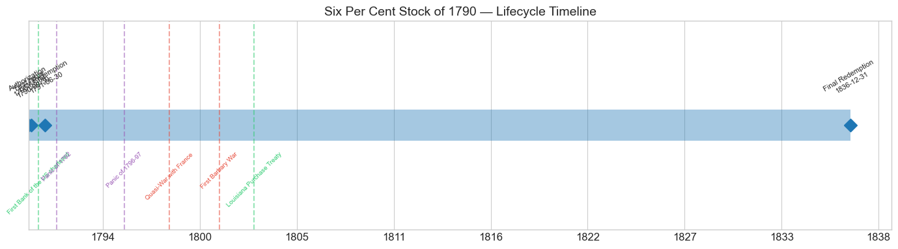
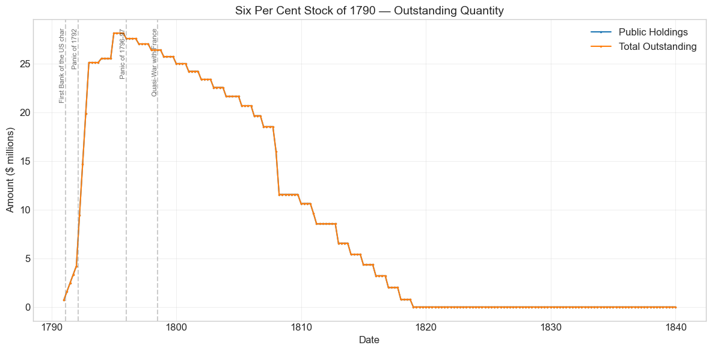
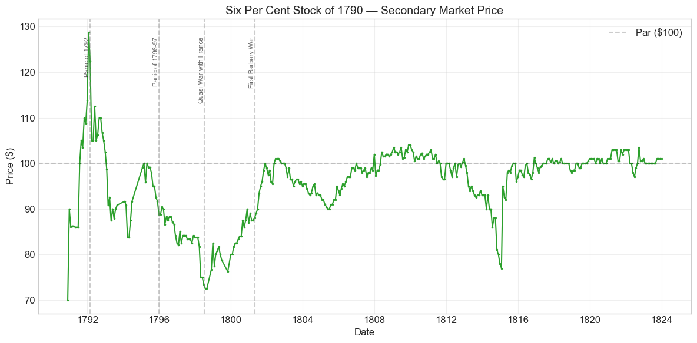
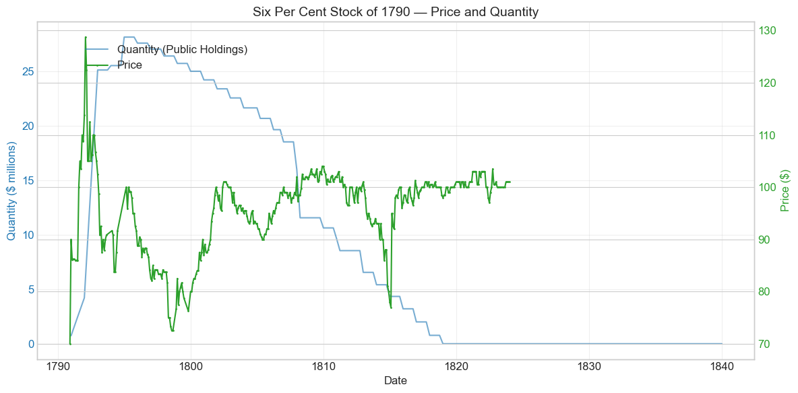
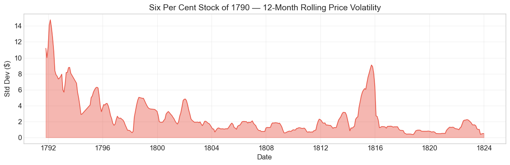
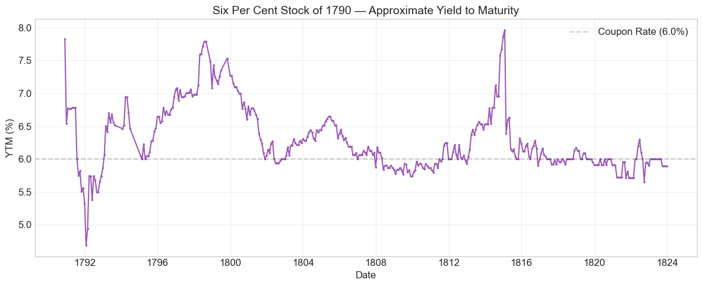

Bond Biography: Six Per Cent Stock of 1790#
The Cornerstone of American Credit: Hamilton’s Six Per Cents#
An enhanced chapter from the Hall-Payne-Sargent US Federal Bond Database (2,857 issues, 1776–1960)
Bond ID (L1): 20021 | Category: Interest Bearing > Marketable > Long Term Bond
import pandas as pd
import numpy as np
import matplotlib.pyplot as plt
import matplotlib.patches as mpatches
import datetime
import warnings
warnings.filterwarnings('ignore')
plt.style.use('seaborn-v0_8-whitegrid')
plt.rcParams.update({'figure.figsize': (12, 6), 'font.size': 12,
'axes.titlesize': 14, 'axes.labelsize': 12})
# Load the bond database
store = pd.HDFStore('../data/BondDF.h5', mode='r')
BondList = store['BondList']
BondQuant = store['BondQuant']
BondPrice = store['BondPrice']
store.close()
BondQuant_T = BondQuant.transpose()
BondPrice_T = BondPrice.transpose()
bond_id = 20021
print(f'Loaded data for: Six Per Cent Stock of 1790 (ID: 20021)')
/Users/thomassargent/anaconda3/lib/python3.9/site-packages/pandas/core/arrays/masked.py:60: UserWarning: Pandas requires version '1.3.6' or newer of 'bottleneck' (version '1.3.5' currently installed).
from pandas.core import (
Loaded data for: Six Per Cent Stock of 1790 (ID: 20021)
The Senior Security of Hamilton’s Funding System#
When Alexander Hamilton’s Report Relating to a Provision for the Support of Public Credit (January 9, 1790) became law as the Funding Act of August 4, 1790 (1 Stat. 138), it created three new federal securities into which the tangled debts of the Revolution were to be exchanged: a Six Per Cent Stock paying interest immediately, a Deferred Six Per Cent Stock (ID 20022) on which interest would not begin until 1801, and a Three Per Cent Stock (ID 20023) into which the arrears of interest were funded. The political drama behind that act — Madison’s failed push to discriminate between original holders and speculators, the bitter fight over the assumption of state debts, and the famous dinner-table bargain that traded assumption for a capital on the Potomac — is told in the companion chapter on the Three Per Cent Stock. This chapter is about the senior member of the trio: the plain, immediate Six Per Cent Stock of 1790, the security contemporaries simply called “the sixes,” or “6 per cents.”
The 6s were the heart of the bargain. Under the Funding Act’s exchange terms, a subscriber presenting $100 of the principal of the old domestic debt received two-thirds ($66.67) in this stock, bearing interest at 6% from January 1, 1791, payable quarterly in specie, and one-third in the deferred stock. Holders of assumed state debt received four-ninths of their claim in the 6s. The interest was funded on permanent revenues — chiefly the customs duties the new Constitution empowered Congress to levy — and the stock was transferable by book entry at the Treasury and at loan offices in each state. Almost overnight, certificates that had traded at a few shillings on the pound in the 1780s became a modern, negotiable, interest-paying government security.
The 6s immediately became the benchmark asset of the first American securities markets. When brokers gathered under the buttonwood tree on Wall Street, when Philadelphia and Boston papers printed their earliest securities quotations, the price of “6 per cents” led the list. And the price history recorded here — 382 monthly observations from November 1790 to December 1823 — tells a very different story from that of the junior 3s. Where the three per cents spent decades at fifty or sixty cents on the dollar (an arithmetic consequence of their low coupon, not of distrust), the sixes climbed from about $70 in late 1790 to par within two years and thereafter traded near or above $100 for most of their life. That trajectory — from deep discount to sustained par — is the single most compact piece of evidence we have that Hamilton’s program worked: within a remarkably short time, the market judged the credit of the United States to be worth its face value.
The Redemption Constraint: A Bond That Was Almost an Annuity#
One clause of the Funding Act shaped the sixes’ market behavior more than any other. The stock had no maturity date, and it was redeemable at the pleasure of the government — but only slowly. The Act pledged that redemption payments should not exceed, in any one year, eight dollars per hundred of the original sum, on account of principal and interest together. Since the interest alone was six dollars, the government could retire no more than about 2% of the principal per year. Hamilton inserted the limitation deliberately: it was a credible commitment that the new stock would not be called away the moment interest rates fell, and it made the 6s attractive to investors — especially European investors accustomed to British consols — who wanted a durable stream of income rather than a short-dated claim.
The pricing implications were profound. A conventional callable 6% bond can scarcely trade above par, because the issuer will redeem it at 100 whenever it can refinance more cheaply. The sixes, by contrast, were quasi-annuities: even if the Treasury exercised its redemption right to the fullest, a holder kept most of the 6% stream for decades. When market yields fell below 6% — or when speculative demand ran hot, as in 1791–92 — the stock could and did trade at substantial premiums, reaching the $128.75 peak recorded in this database at the height of the January 1792 boom. Contemporaries debated whether the limitation was a boon or a trap; Albert Gallatin later grumbled that it tied the Treasury’s hands, forcing the government to keep paying 6% on debt it would gladly have refinanced. Both were right. The constraint was the price of credibility in 1790, and the cost of inflexibility thereafter.
A second feature magnified demand. When Congress chartered the Bank of the United States in February 1791, it made the 6s quasi-money: each $400 Bank share was payable one-quarter in specie and three-quarters in United States 6% stock. Anyone who wished to subscribe to the Bank needed to hold government sixes (or the other funded stock accepted on prescribed terms), and the July 1791 subscription — conducted through $25 down-payment receipts known as scrip — was oversubscribed within an hour. The Bank charter thus welded the market for Bank shares to the market for the funded debt, with consequences, both euphoric and catastrophic, that dominate the first two years of the price series below.
Historical Context#
The following major events occurred during this bond’s lifetime:
Date |
Event |
Category |
|---|---|---|
1791-02-25 |
First Bank of the US chartered |
Legislation |
1792-03-01 to 1792-04-30 |
Panic of 1792 |
Crisis |
1796-01-01 to 1797-12-31 |
Panic of 1796-97 |
Crisis |
1798-07-07 to 1800-09-30 |
Quasi-War with France |
War |
1801-05-10 to 1805-06-10 |
First Barbary War |
War |
1803-04-30 |
Louisiana Purchase Treaty |
Legislation |
1803-12-20 |
Louisiana Territory transferred to US |
Other |
1811-03-03 |
First Bank charter expires |
Legislation |
1812-06-18 to 1815-02-18 |
War of 1812 |
War |
1814-08-24 |
British burn Washington, D.C. |
Other |
1814-12-24 |
Treaty of Ghent (War of 1812 ends) |
Other |
1816-04-10 |
Second Bank of the US chartered |
Legislation |
1819-01-01 to 1821-12-31 |
Panic of 1819 |
Crisis |
1836-03-03 |
Second Bank charter expires |
Legislation |
Scripomania and the Panic of 1792#
The sixes were the epicenter of America’s first bubble and first crash. Through 1791 the price ran up relentlessly — from around $70–90 in the winter of 1790–91 to par and beyond — fed by the Bank subscription (which created a captive demand for 6% stock), by the frenzy over Bank scrip in July and August 1791, and then by the leveraged campaign of William Duer, the former Assistant Secretary of the Treasury who, with Alexander Macomb and other partners, borrowed enormously in an attempt to corner the market in 6% stock and Bank shares. It was the sixes, specifically, that Duer sought to corner: his contracts for future delivery of 6% stock were the derivative instruments of the boom. The price series records the peak in January 1792 at $128.75 — nearly 29% above par for a 6% security, a level only mania could sustain.
When Duer’s paper was protested in early March 1792 he was carried to debtors’ prison, and prices broke violently — the data show a -14.3% collapse in March 1792. Hamilton’s response, documented by Sylla, Wright, and Cowen (2009), reads like a manual of modern crisis management avant la lettre: open-market purchases of government stock through the commissioners of the sinking fund, encouragement to banks to keep lending against government securities as collateral at a haircut, and coordination with the Bank of New York. The panic was contained within weeks, and the sixes settled back toward par — where, remarkably, they would spend most of the next two decades.
The Panic of 1796–97 and the Quasi-War#
The later 1790s tested the young credit. The Panic of 1796–97 — transmitted from Britain, where the Bank of England suspended specie payments in February 1797, and aggravated by the collapse of American land-speculation schemes such as Robert Morris’s — depressed asset prices generally. Then the Quasi-War with France (1798–1800), an undeclared naval conflict, forced the government to rearm and to borrow anew at 8% (the Eight Per Cent Loans of 1798 and 1800, also in this database). With the Treasury’s new money costing 8%, the old 6s had to cheapen: the series touches its post-issue trough of $72.50 in July 1798, the month war fever peaked — the end point of the bond’s maximum drawdown of -43.7% from the January 1792 speculative peak. Note what that price meant: even at the worst moment of the decade, a 6% coupon on $72.50 implied a running yield near 8.3%, in line with the government’s marginal borrowing rate. The market repriced the level of American interest rates; it never seriously repriced the probability that the coupons would be paid.
Peace, Gallatin, and the Quiet Years#
The Convention of 1800 ended the Quasi-War, and Jefferson’s Treasury Secretary Albert Gallatin spent the following decade grinding down the debt, from roughly $83 million in 1801 to about $45 million by 1812, even while absorbing the $11.25 million Louisiana Purchase stock. For the sixes these were placid, prosperous years: prices held near and often above par, and the First Barbary War (1801–1805) barely registers in the series. Gallatin’s reimbursement machinery — annual redemption at the maximum rate the 1790 Act allowed, supplemented by sinking-fund purchases and by the conversion offers of 1807 (the Exchanged and Converted 6% stocks, IDs 20045 and related) — steadily shrank the outstanding quantity visible in the charts below.
The War of 1812#
War with Britain reversed a decade of consolidation. The federal debt roughly tripled to about $127 million by 1815–16; the Treasury, having lost the First Bank of the United States when its charter lapsed in 1811, borrowed at deepening discounts, and after the burning of Washington in August 1814 banks outside New England suspended specie payments. The old 6s sagged with the rest of the market as new 6% and 7% war loans, sold well below par, crowded the field — why pay near par for old sixes when new ones could be had at 80 or 88? Prices recovered after the Treaty of Ghent, and in the postwar years the remaining stock traded quietly until the Treasury, flush with tariff and land revenues, retired it.
# Bond Lifecycle Timeline
fig, ax = plt.subplots(figsize=(14, 4))
# Key dates
dates = [('Authorization', '1790-08-04'), ('First Issue', '1790-09-30'), ('First Redemption', '1791-06-30'), ('Final Redemption', '1836-12-31')]
events = [('First Bank of the US chartered', '1791-02-25', 'legislation'), ('Panic of 1792', '1792-03-01', 'crisis'), ('Panic of 1796-97', '1796-01-01', 'crisis'), ('Quasi-War with France', '1798-07-07', 'war'), ('First Barbary War', '1801-05-10', 'war'), ('Louisiana Purchase Treaty', '1803-04-30', 'legislation')]
import matplotlib.dates as mdates
from datetime import datetime
# Plot bond lifetime bar
d0 = datetime.strptime(dates[0][1], '%Y-%m-%d')
d1 = datetime.strptime(dates[-1][1], '%Y-%m-%d')
ax.barh(0, (d1 - d0).days, left=mdates.date2num(d0), height=0.3,
color='#1f77b4', alpha=0.4, label='Bond Lifetime')
# Mark key dates
for label, date_str in dates:
d = datetime.strptime(date_str, '%Y-%m-%d')
ax.plot(mdates.date2num(d), 0, 'D', color='#1f77b4', markersize=10)
ax.annotate(f'{label}\n{date_str}', (mdates.date2num(d), 0.25),
ha='center', va='bottom', fontsize=8, rotation=30)
# Mark historical events
colors = {'war': '#e74c3c', 'crisis': '#9b59b6', 'legislation': '#2ecc71', 'other': '#95a5a6', 'monetary': '#f39c12'}
for name, date_str, cat in events:
d = datetime.strptime(date_str, '%Y-%m-%d')
ax.axvline(mdates.date2num(d), color=colors.get(cat, 'gray'), alpha=0.5, linestyle='--')
ax.annotate(name, (mdates.date2num(d), -0.25), ha='center', va='top',
fontsize=7, rotation=45, color=colors.get(cat, 'gray'))
ax.set_yticks([])
ax.xaxis.set_major_formatter(mdates.DateFormatter('%Y'))
ax.set_title('Six Per Cent Stock of 1790 — Lifecycle Timeline')
ax.set_ylim(-1, 1)
plt.tight_layout()
plt.show()

Bond Features#
Feature |
Detail |
|---|---|
Name |
Six Per Cent Stock of 1790 |
Authorizing Act |
August 4, 1790 (the Funding Act, 1 Stat. 138) |
First Issue Date |
September 30, 1790 |
Term |
Indefinite — no stated maturity |
First Redemption |
June 30, 1791 |
Final Redemption |
December 31, 1836 |
Coupon Rate |
6.0% per annum, from January 1, 1791 |
Payment Frequency |
Quarterly (4 times/year) |
Redemption |
At the pleasure of the government, capped at $8 per $100 per year, principal and interest combined (≈2% of principal per year) |
Payable in Coin |
Yes |
Origin |
Exchanged for two-thirds of the principal of the domestic debt and four-ninths of assumed state debts |
The redemption cap is the feature that distinguishes the 6s from every later U.S. issue. It made the stock, in effect, a slowly self-amortizing annuity: once the government began reimbursement, a holder received the maximum $8 a year per $100 — $6 of interest and $2 of principal at first, with the proportions shifting as the principal declined — until the account was closed. Together with quarterly specie interest, book-entry transferability, and quotation in every commercial newspaper, these features made the funded 6% stock of 1790 one of the first recognizably modern government securities in the world.
# Display full bond features from database
row = BondList.loc[20021]
display_cols = [
"Treasury's Name Of Issue", 'Authorizing Act', 'Term Of Loan',
'First Issue Date', 'First Redemption Date', 'Final Redemption Date',
'Coupon Rate', 'Coupons Per Year', 'Callable', 'Coin',
'Authorized Amount', 'Price Sold'
]
print('Bond Features from Database:')
print('=' * 55)
for col in display_cols:
if col in row.index:
print(f' {col:<30} {row[col]}')
Bond Features from Database:
=======================================================
Treasury's Name Of Issue Six Per Cent Stock of 1790
Authorizing Act August 4, 1790
Term Of Loan indefinite
First Issue Date 1790-09-30 00:00:00
First Redemption Date 1791-06-30 00:00:00
Final Redemption Date 1836-12-31 00:00:00
Coupon Rate 6.0
Coupons Per Year 4.0
Callable 0.0
Coin 1.0
Authorized Amount nan
Price Sold 1.0
Bond Quantity Over Time#
The bond’s outstanding quantity peaked at $28.17 million on December 31, 1794. Quantity data span 1790 to 1839 (197 monthly observations).
# Bond quantity over time
fig, ax = plt.subplots(figsize=(12, 6))
for stype in ['Public Holdings', 'Total Outstanding']:
try:
s = BondQuant_T.loc[(20021, stype)]
s = s[s.notna()]
if len(s) > 0:
ax.plot(s.index, s.values / 1e6, marker='.', markersize=3, linewidth=1.5, label=stype)
except KeyError:
pass
ax.set_title('Six Per Cent Stock of 1790 — Outstanding Quantity')
ax.set_xlabel('Date')
ax.set_ylabel('Amount ($ millions)')
ax.legend()
ax.grid(True, alpha=0.3)
events = {'1791-02-25': 'First Bank of the US char', '1792-03-01': 'Panic of 1792', '1796-01-01': 'Panic of 1796-97', '1798-07-07': 'Quasi-War with France'}
for date_str, label in events.items():
d = pd.Timestamp(date_str)
ax.axvline(d, color='gray', alpha=0.4, linestyle='--')
ax.text(d, ax.get_ylim()[1]*0.97, label, rotation=90, va='top', ha='right', fontsize=8, alpha=0.7)
plt.tight_layout()
plt.show()

Quantity Analysis#
The issuance pattern reflects the administrative rollout of the funding program, not a market placement. The 6s were never sold for cash; they were created by exchange as holders of old Continental and Confederation certificates, and of assumed state debts, subscribed at the Treasury and the state loan offices. The outstanding quantity therefore climbs in steps through 1791–1794 — the data show jumps of +114.1% in March 1791 and +53.3% in June 1791 — as successive subscription waves were recorded, as the $21.5 million of assumed state debts was funded, and as Congress repeatedly extended the deadline for stragglers. The plateau near $28 million at the end of 1794 marks the substantial completion of the exchange.
Redemption ran in the opposite direction, and — uniquely among the 1790 trio — it began early and proceeded on a schedule the law itself dictated. Under the sinking-fund legislation of the mid-1790s the Treasury commenced annual reimbursement of the 6% stock at the maximum rate the Funding Act allowed, paying each year the full $8 per $100 of original principal (interest plus the small permitted slice of principal). Because the cap bound, the paydown was glacial by design: roughly 2% of principal a year at the start, accelerating in later years as accrued interest on a shrinking principal left more of the $8 for redemption. Gallatin supplemented this drip with sinking-fund purchases in the open market — a natural operation whenever the stock traded below par — and with the conversion offers of 1807 and 1812, under which holders could exchange old 6s (and deferred 6s) into new stock redeemable at the government’s pleasure, freeing the Treasury from the 1790 straitjacket. These operations, plus the general debt retirement of the postwar surplus years, account for the long slide visible in the chart from the late 1790s through the 1820s. By the standards of its junior sibling the 3% stock — which sat almost untouched until the 1830s because its cheap coupon made it the last debt worth retiring — the expensive 6s were a priority target throughout, and the stock was effectively extinguished years before the final small balances of unclaimed stock account for the December 31, 1836 terminal date in the database.
Secondary Market Prices#
Overall Statistics (1790-11-30 to 1823-12-31): Mean $95.72, Range $70.0–$128.75, Std Dev $7.69, 382 observations.
By Period:
Period |
Mean |
Std |
Min |
Max |
Obs |
|---|---|---|---|---|---|
Issue to First Redemption (1790-09 to 1791-06) |
$84.58 |
$6.05 |
$70.0 |
$90.0 |
8 |
First Redemption to Final Redemption (1791-06 to 1836-12) |
$95.93 |
$7.55 |
$72.5 |
$128.75 |
375 |
Three things stand out. First, the starting discount: at $70–90 in the winter of 1790–91, the market was still pricing residual doubt about whether the funding system would actually deliver its quarterly specie coupons. Second, the speed of convergence: within roughly two years the stock reached par, and the lifetime mean of $95.72 — with most observations clustered in the 90s and low 100s — makes the 6s the early republic’s closest approximation to a riskless benchmark. Third, the premium episodes: the $128.75 peak of January 1792 belongs to the Duer bubble, but the stock’s ability to hold above par in calmer years was a rational consequence of the redemption cap — a 6% stream that cannot be called away faster than 2% a year is worth more than 100 whenever the market’s required yield dips below 6%. Contrast all of this with the companion 3% stock, which traded near $50 for decades: same credit, same revenues, same market — the entire difference is coupon arithmetic and redemption terms.
# Annotated price chart
fig, ax = plt.subplots(figsize=(12, 6))
s = BondPrice_T.loc[(20021, 'Average')]
s = pd.to_numeric(s, errors='coerce').dropna()
if len(s) > 0:
ax.plot(s.index, s.values, marker='.', markersize=3, linewidth=1.5, color='#2ca02c')
ax.axhline(100, color='black', alpha=0.2, linestyle='--', label='Par ($100)')
ax.set_title('Six Per Cent Stock of 1790 — Secondary Market Price')
ax.set_xlabel('Date')
ax.set_ylabel('Price ($)')
ax.legend()
ax.grid(True, alpha=0.3)
events = {'1792-03-01': 'Panic of 1792', '1796-01-01': 'Panic of 1796-97', '1798-07-07': 'Quasi-War with France', '1801-05-10': 'First Barbary War'}
for date_str, label in events.items():
d = pd.Timestamp(date_str)
ax.axvline(d, color='gray', alpha=0.4, linestyle='--')
ax.text(d, ax.get_ylim()[1]*0.97, label, rotation=90, va='top', ha='right', fontsize=8, alpha=0.7)
plt.tight_layout()
plt.show()

# Price and Quantity — dual-axis chart
fig, ax1 = plt.subplots(figsize=(12, 6))
# Quantity (left axis)
for stype in ['Public Holdings', 'Total Outstanding']:
try:
q = BondQuant_T.loc[(20021, stype)]
q = q[q.notna()]
if len(q) > 0:
ax1.plot(q.index, q.values / 1e6, color='#1f77b4', alpha=0.6, label=f'Quantity ({stype})')
break
except KeyError:
pass
ax1.set_xlabel('Date')
ax1.set_ylabel('Quantity ($ millions)', color='#1f77b4')
ax1.tick_params(axis='y', labelcolor='#1f77b4')
# Price (right axis)
ax2 = ax1.twinx()
p = BondPrice_T.loc[(20021, 'Average')]
p = pd.to_numeric(p, errors='coerce').dropna()
if len(p) > 0:
ax2.plot(p.index, p.values, color='#2ca02c', marker='.', markersize=2, label='Price')
ax2.set_ylabel('Price ($)', color='#2ca02c')
ax2.tick_params(axis='y', labelcolor='#2ca02c')
ax1.set_title('Six Per Cent Stock of 1790 — Price and Quantity')
ax1.grid(True, alpha=0.3)
fig.legend(loc='upper left', bbox_to_anchor=(0.1, 0.9))
plt.tight_layout()
plt.show()

Detected Price/Quantity Events#
The following significant movements were auto-detected:
Date |
Type |
Change |
Nearest Historical Event |
|---|---|---|---|
1790-12 |
price_spike |
+28.6% |
First Bank of the US chartered |
1791-03 |
quantity_increase |
+114.1% |
First Bank of the US chartered |
1791-06 |
quantity_increase |
+53.3% |
First Bank of the US chartered |
1791-07 |
price_spike |
+16.3% |
First Bank of the US chartered |
1791-08 |
price_spike |
+5.0% |
Panic of 1792 |
1791-09 |
quantity_increase |
+34.8% |
Panic of 1792 |
1791-10 |
price_spike |
+6.3% |
Panic of 1792 |
1791-12 |
quantity_increase |
+25.8% |
Panic of 1792 |
1792-01 |
price_spike |
+13.2% |
Panic of 1792 |
1792-03 |
price_drop |
-14.3% |
Panic of 1792 |
The causal chain behind this cluster is well documented (Davis 1917; Sylla, Wright & Cowen 2009), and the auto-detected labels can be sharpened. The December 1790 jump (+28.6%) reflects the market’s growing confidence as the machinery of the funding system came into operation and the first interest payment (due at the end of March 1791) approached. The quantity jumps of 1791 are funding mechanics, not markets: waves of old certificates being subscribed into new stock at the loan offices. The July 1791 spike (+16.3%) is scripomania — the wildly oversubscribed initial offering of Bank of the United States scrip on July 4, 1791, which pulled up all government stock, and the 6s most of all, since three-quarters of every Bank share had to be paid in them. The steady gains of August 1791 through January 1792 trace the Duer boom: leveraged speculators, borrowing at usurious rates, bidding up the very security they had contracted to deliver. And the -14.3% break of March 1792 is the Panic itself — Duer’s failure in early March, forced liquidation of leveraged positions, and the first test of the Treasury’s willingness to stabilize the market for its own debt. Hamilton’s sinking-fund purchases passed that test, and the price found its footing near par within months.
Price Volatility#
Maximum drawdown: -43.7% (from the speculative peak of January 31, 1792 to the Quasi-War trough of July 31, 1798)
Average monthly return: 0.141%
As with its siblings, the volatility profile is front-loaded: the wildest months of the bond’s life all fall in 1791–92, during the scrip bubble and the Panic, with a secondary ridge around the Quasi-War alarm of 1798 and another during the War of 1812. But note the difference in level: measured from the post-bubble baseline near par rather than from the mania peak, the sixes’ swings were far gentler than the headline drawdown suggests. For most of its life this was the stable asset of the American market — the security against which everything else was measured.
# Rolling volatility (12-month window)
p = BondPrice_T.loc[(20021, 'Average')]
p = pd.to_numeric(p, errors='coerce').dropna()
if len(p) >= 12:
rolling_std = p.rolling(window=12).std().dropna()
fig, ax = plt.subplots(figsize=(12, 4))
ax.fill_between(rolling_std.index, rolling_std.values, alpha=0.4, color='#e74c3c')
ax.plot(rolling_std.index, rolling_std.values, color='#e74c3c', linewidth=1)
ax.set_title('Six Per Cent Stock of 1790 — 12-Month Rolling Price Volatility')
ax.set_xlabel('Date')
ax.set_ylabel('Std Dev ($)')
ax.grid(True, alpha=0.3)
plt.tight_layout()
plt.show()
else:
print('Insufficient data for rolling volatility (need >= 12 observations)')

Approximate Yield to Maturity#
Because the Six Per Cent Stock had no contractual maturity — only the slow reimbursement permitted by the redemption cap — a conventional yield to maturity is not strictly defined. The calculation below treats the final redemption date recorded in the database (December 31, 1836) as the terminal date, which overstates the true effective maturity for most of the series, since most of the stock was reimbursed, purchased, or converted much earlier. The more meaningful number for the early decades is the current yield — the 6% coupon divided by price — which ran near 6% whenever the stock stood at par and touched roughly 8% at the 1798 trough, matching the rate on the government’s contemporaneous 8% war loans. The computed YTM’s dips below the coupon rate correspond to the premium episodes: the market accepting less than 6% on a stream that the redemption constraint protected from early call.
# Approximate Yield to Maturity
p = BondPrice_T.loc[(20021, 'Average')]
p = pd.to_numeric(p, errors='coerce').dropna()
final_redemption = pd.Timestamp('1836-12-31')
coupon_rate = 6.0
ytm_values = []
ytm_dates = []
for date, price in p.items():
years_left = (final_redemption - date).days / 365.25
if years_left > 0 and price > 0:
ytm = (coupon_rate + (100 - price) / years_left) / ((100 + price) / 2) * 100
ytm_values.append(ytm)
ytm_dates.append(date)
if ytm_values:
fig, ax = plt.subplots(figsize=(12, 5))
ax.plot(ytm_dates, ytm_values, color='#9b59b6', marker='.', markersize=3, linewidth=1.5)
ax.axhline(6.0, color='black', alpha=0.2, linestyle='--', label=f'Coupon Rate ({coupon_rate}%)')
ax.set_title('Six Per Cent Stock of 1790 — Approximate Yield to Maturity')
ax.set_xlabel('Date')
ax.set_ylabel('YTM (%)')
ax.legend()
ax.grid(True, alpha=0.3)
plt.tight_layout()
plt.show()
else:
print('Could not compute YTM')

Issuance, Distribution, and Redemption#
How it was placed. There were no underwriters and no offering price. The “Price Sold” of 1.0 (par) in the database records an exchange at face value: holders of the principal of the old domestic debt subscribed their certificates at the Treasury or a state loan office and received book-entry 6% stock for two-thirds of their claim (the remainder in deferred stock); holders of assumed state debts received four-ninths of theirs in 6s. Certificates of the new stock were issued in whatever amounts subscribers’ claims dictated, and ownership was transferred on the books of the Treasury and the loan offices — an infrastructure that made the stock, for its era, exceptionally easy to trade.
Who held it. The initial holders were whoever held the old paper on subscription day: original creditors — veterans, farmers, army suppliers — alongside the speculators who had accumulated certificates cheaply through the 1780s and in the anticipatory scramble of 1789–90. Ownership then broadened and internationalized. Banks and insurance companies held the 6s as their core earning asset; the Bank of the United States subscription of 1791 pulled millions of the stock into the Bank’s own capital; trustees and estates favored it as the safest income available in America. Above all, foreign investors — the Dutch first among them — accumulated a large share. The Amsterdam houses that had lent to the Confederation in the 1780s (the Holland Loans in the table above) knew American credit intimately, and Dutch purchases of the funded debt in the 1790s were heavy; by the turn of the century a substantial fraction of the 6% stock was held abroad, transferred on the Treasury’s books through American agents. The stock was quoted continuously in Philadelphia, New York, Boston, and Baltimore, and its standing in Amsterdam and London made it the young republic’s calling card in European capital markets.
How it ended. Reimbursement began in the mid-1790s at the maximum pace the Funding Act permitted and continued year by year; Gallatin’s sinking fund bought stock in the open market whenever prices made purchases economical; and the conversion offers of 1807 and 1812 let holders exchange into new 6% stock free of the old redemption cap, which the Treasury could then retire at will. Through these three channels the original 6s were gradually extinguished — the bulk of the operation complete by the 1820s, with the database’s final redemption date of December 31, 1836 marking the closing of the last unclaimed balances, in the same years that the United States, uniquely among major nations then or since, paid off its national debt entirely.
Implications and Legacy#
The proof that credit could be rebuilt. The Six Per Cent Stock of 1790 is the security on which Hamilton’s wager was won or lost, and the price series is the verdict: from $70 in late 1790 to par within two years, and near par for a generation. A government that had been unable to pay any interest at all in the 1780s was, by the mid-1790s, borrowing on terms comparable to long-established European states. Every subsequent act of American public finance — the Louisiana Purchase stock of 1803, the war loans of 1812, the Civil War five-twenties — drew on the reputation first embodied in this bond.
The benchmark of the first securities markets. The 6s gave the infant exchanges of New York and Philadelphia their staple commodity. The dealers who signed the Buttonwood Agreement in May 1792 — weeks after the Panic, and partly in reaction to it — were organizing a market whose principal merchandise was federal 6% stock. The bond’s continuous quotations anchored the pricing of everything else: the deferred stock, the 3s, Bank shares, and eventually state and corporate issues. It is fair to call the 6s America’s first benchmark security, the functional ancestor of the modern long Treasury.
A lesson in contract design. The redemption cap is an early, deliberate exercise in what economists now call commitment through contract. By binding itself not to redeem quickly, the government made its debt more valuable and its promise more credible — and then spent thirty years paying for that credibility in above-market coupons it could not refinance, until the conversions of 1807 and 1812 bought back the flexibility. Garber (1991) reads Hamilton’s whole funding operation as a market-based debt restructuring; the 6s’ redemption clause is the part of the deal where the government gave value rather than took it.
Crisis management, twice over. The bond sat at the center of the first American financial crisis and of the government’s first crisis response. The Panic of 1792 demonstrated that leveraged speculation could break a market in weeks; Hamilton’s sinking-fund purchases demonstrated that a Treasury could stabilize the market for its own debt without bailing out the speculators — Duer stayed in debtors’ prison, where he died in 1799, while the market he broke recovered around him.
A window on the first yield curve. For the historian of finance, the 6s and their siblings constitute a natural experiment: three claims on identical credit, differing only in coupon and timing, priced side by side for decades. Their relative prices let researchers reconstruct early American discount rates and watch a sovereign yield curve come into existence — which is why studies of Hamilton’s system, from Bayley’s 1881 compilation to modern work by Sylla, by Garber, and by Hall and Sargent, return to these securities again and again.
References#
Primary Sources#
Hamilton, A. (1790). Report Relating to a Provision for the Support of Public Credit, communicated to the House of Representatives, January 9, 1790.
U.S. Congress, An Act making provision for the (payment of the) Debt of the United States (the Funding Act), August 4, 1790, 1 Stat. 138.
U.S. Congress, An Act to incorporate the subscribers to the Bank of the United States, February 25, 1791, 1 Stat. 191.
U.S. Treasury Department, annual reports of the Secretary of the Treasury and of the Commissioners of the Sinking Fund, 1790s–1830s.
Scholarly Works#
Sylla, R., Wright, R. E. & Cowen, D. J. (2009). “Alexander Hamilton, Central Banker: Crisis Management during the U.S. Financial Panic of 1792.” Business History Review 83(1): 61–86.
Davis, J. S. (1917). Essays in the Earlier History of American Corporations. Cambridge: Harvard University Press.
Garber, P. M. (1991). “Alexander Hamilton’s Market-Based Debt Reduction Plan.” Carnegie-Rochester Conference Series on Public Policy 35: 79–104.
Sylla, R. (1998). “U.S. Securities Markets and the Banking System, 1790–1840.” Federal Reserve Bank of St. Louis Review 80(3): 83–98.
Hall, G. J. & Sargent, T. J. (2014). “Fiscal Discriminations in Three Wars.” Journal of Monetary Economics 61: 148–166.
Hall, G. J. & Sargent, T. J. (2018). “Brief History of US Debt Limits Before 1939.” Proceedings of the National Academy of Sciences 115(12): 2942–2945.
Payne, J., Szőke, B., Hall, G. & Sargent, T. (2025). Quarterly Journal of Economics.
General Histories#
Bayley, R. A. (1881). The National Loans of the United States, From July 4, 1776 to June 30, 1880. Washington: Government Printing Office.
Dewey, D. R. (1918). Financial History of the United States. New York: Longmans, Green and Co.
Studenski, P. & Krooss, H. E. (1952). Financial History of the United States. New York: McGraw-Hill.
Perkins, E. (1994). American Public Finance and Financial Services, 1700–1815. Columbus: Ohio State University Press.
Ferguson, E. J. (1961). The Power of the Purse: A History of American Public Finance, 1776–1790. Chapel Hill: University of North Carolina Press.
Chernow, R. (2004). Alexander Hamilton. New York: Penguin Press.
Enhanced Bond Biography generated from the Hall-Payne-Sargent Bond Database. Narrative enrichment draws on Ferguson (1961), Davis (1917), Sylla, Wright & Cowen (2009), Garber (1991), Bayley (1881), Studenski & Krooss (1952), and Perkins (1994). See the companion chapter on the Three Per Cent Stock of 1790 (ID 20023) for a fuller account of the political struggle over the Funding Act.